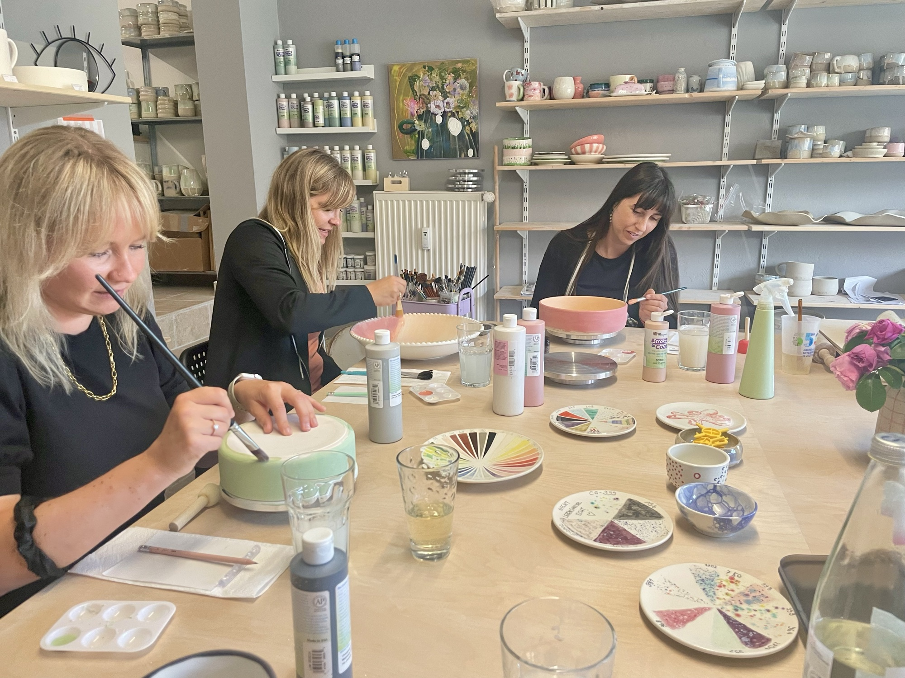
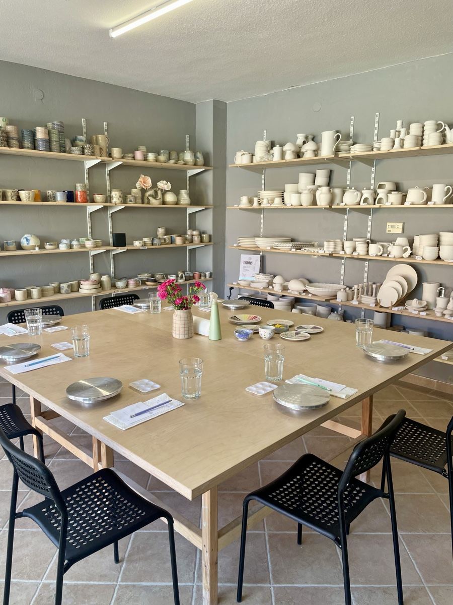

Meine Angebote
Spielerische Sprachbildung und kreative Erlebnisse – für Kitas, Grundschulen, Familien und Erwachsene in der Region Teltow-Fläming.
English Explorers
Was ist English Explorers?
English Explorers ist mein mobiles Englisch-Programm für Kitas und Grundschulen im Landkreis Teltow-Fläming. Ich komme direkt in die Einrichtung und gestalte dort wöchentliche, altersgerechte Gruppenstunden, in denen Kinder Englisch aktiv erleben und anwenden.
Bewährte Methoden der Sprachförderung
Im Mittelpunkt stehen bewährte Methoden der frühkindlichen Sprachförderung: Mit Total Physical Response verbinde ich Sprache und Bewegung, sodass Kinder neue Wörter mit ihrem ganzen Körper erfassen und verankern. Storytelling weckt Fantasie und Vorstellungskraft und schult gleichzeitig das Hörverstehen. Musik, Reime und Rhythmus machen Sprachmuster erlebbar und bleiben durch ihren Klang besonders gut im Gedächtnis. Spielbasiertes Lernen rahmt jede Einheit und macht Fortschritte zu einem gemeinsamen, freudvollen Erlebnis.
Mehr als nur Sprache
Diese Methoden fördern weit mehr als Sprache: Bewegung stärkt die motorischen Fähigkeiten und das Körpergefühl der Kinder, Musik und Reime schulen das Gehör und die Merkfähigkeit, Geschichten fördern Konzentration und Vorstellungskraft, und das gemeinsame Spiel in der Gruppe stärkt soziale Kompetenzen wie Teilen, Zuhören und Zusammenarbeiten. Dabei gewinnen Kinder Selbstvertrauen in ihre eigenen Fähigkeiten und entwickeln eine neugierige, offene Haltung gegenüber neuen Herausforderungen.
Euer Mehrwert als Kita oder Schule
Kitas und Grundschulen erhalten mit English Explorers ein pädagogisch fundiertes Zusatzangebot, das direkt in ihren Räumen stattfindet. Eltern erleben, wie ihr Kind früh, spielerisch und mit echter Freude Englisch entdeckt – und dabei ganz nebenbei in vielen weiteren Bereichen wächst.
Bereit für ein pädagogisch fundiertes Zusatzangebot in eurer Kita oder Schule?
Jetzt Schnupperstunde vereinbarenKonversationscoaching
Dein individuelles 1:1 Coaching
Für Erwachsene, die ihr Englisch im Gespräch sicherer und selbstverständlicher nutzen möchten, biete ich individuelles 1:1 Coaching per Videokonferenz an – flexibel planbar und bequem von zuhause oder unterwegs.
Praxisnah, von Anfang an
Jede Coaching-Einheit orientiert sich an deinen persönlichen Zielen: ob berufliche Meetings, Smalltalk im Alltag, eine bevorstehende Reise oder einfach mehr Sicherheit im gesprochenen Englisch. Wir sprechen von Anfang an in echten, praxisnahen Situationen, sodass du das Gelernte sofort anwenden kannst.
Wachsen in deinem eigenen Tempo
In der persönlichen 1:1 Betreuung entsteht ein geschützter Rahmen, in dem du in deinem eigenen Tempo wächst. Du baust Sicherheit im Sprechen auf, gewinnst Selbstvertrauen für reale Gespräche und machst deine Fortschritte von Anfang an spürbar.
Dein erster Schritt
Am Anfang steht ein kostenloses Kennenlerngespräch, in dem wir gemeinsam deine Ziele und den passenden Ablauf besprechen.
Dein erster Schritt zu mehr Sicherheit im Englischen.
Kostenloses Kennenlernen buchenKeramik bemalen
„Ich kann aber nicht malen." Diesen Satz hören wir beim Keramik-Bemalen fast immer – und er ist genau der Grund, warum wir diese Workshops so lieben. Denn hier geht es nicht darum, ein Kunstwerk abzuliefern. Es geht darum, sich zu trauen.
Du brauchst kein Talent – nur Lust, etwas auszuprobieren
Beim Keramik bemalen gibt es kein Richtig oder Falsch. Keine Bewertung, keinen Vergleich, keinen Druck. Es gibt nur dich, einen Pinsel, ein Stück Keramik – und die Freiheit, einfach loszulegen. Manche malen ordentliche Muster, andere lassen Farben ineinanderfließen, wieder andere probieren zum ersten Mal seit der Schulzeit wieder, mit Farbe zu arbeiten. Alles ist richtig, solange es von dir kommt.
Genau darin liegt die kleine Magie dieser Stunden: Wer sich erlaubt, unperfekt zu sein, merkt oft ganz schnell, wie viel Freude dabei entsteht. Und mit jedem Pinselstrich wächst ein Stück Selbstvertrauen – nicht weil das Ergebnis perfekt ist, sondern weil du es einfach gemacht hast.
So läuft ein Workshop ab
In Kooperation mit Studio Moki in Saalow bieten wir Keramik-Workshops für Kinder, Erwachsene und Familien an. Du suchst dir ein Rohling aus – eine Tasse, eine Schale, eine kleine Figur – und bekommst alle Farben, Pinsel und Techniken an die Hand, die du brauchst. Wir zeigen dir gerne ein paar einfache Tricks, aber am Ende zählt vor allem eins: dass du Spaß hast und dein eigenes, einzigartiges Stück mit nach Hause nimmst. Nach dem Bemalen wird deine Keramik glasiert und gebrannt – ein kleines Wiedersehen, auf das man sich freuen kann.
Für alle, die sich (noch) nicht als kreativ bezeichnen würden
Ob mit deinen Kindern, mit Freundinnen bei einem gemütlichen Nachmittag oder ganz allein als kleine Auszeit vom Alltag – unsere Keramik-Workshops sind ein Ort, an dem niemand malen können muss, um dazuzugehören. Bei Double Rooted schlagen Sprache und Kreativität gemeinsam Wurzeln – because that's where confidence grows. Und manchmal fängt genau das mit einem einzigen, ganz unperfekten Pinselstrich an.
Termine und Buchung findest du direkt bei Studio Moki.
Bereit, deiner Kreativität freien Lauf zu lassen?
Jetzt Platz sichern bei Studio Moki
